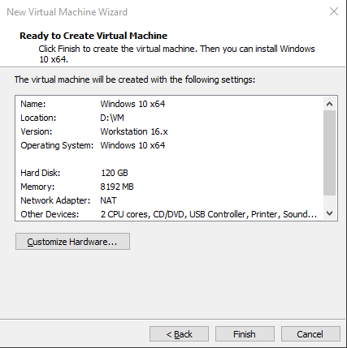
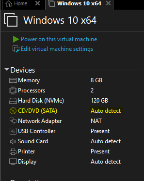

A VMware Workstaion Pro nevű programon mutatjuk be, hogy kell telepíteni egy vírtuális gépet.
1. lépés: Megnyitjuk a programot.
2. lépés: Rákattintuk a "Create a New Virtual Machine" nevű opcióra és kiválasztjuk a "Custom(advanced)" opciót a felugró ablakban.
3. lépés: "Next" gombra rákattintuk, mert ezek a beállítások megfelelnek.
4. lépés: Kiválasztjuk "I will install the opreating system later" opciót, és a "Next" gombra rákattintuk.
4. lépés: Kiválasztjuk a telepíteni kívánt operációs rendszert. Mi a Windows 10-et telepítjük fel, és a "Next" gombra rákattintuk.
5. lépés: Tetszés szerint átírjuk a virtuális számítógép nevét, és meghatározzunk a telepítés helyét, és a "Next" gombra rákattintuk.
6. lépés: "Next" gombra rákattintuk, mert ezek a beállítások megfelelnek.
7. lépés: Kiválasztjuk a használni kíánt CPU-k számát, valamint mennyi magot haszáljon ki belőle, és a "Next" gombra rákattintuk.
8. lépés: Testreszabjuk a használni kívánt RAM mennyiséget. A program megadja az ajánlottat, de mi felülírhatjuk, csak ne adjunk meg a megengedettnél magasabbat, mert instabil lesz a fizikai gép is
,meg a virtuális gép is. Mi 8 GB ramot adunk neki,és a "Next" gombra rákattintuk.
9. lépés: "Next" gombra rákattintuk, mert ezek a beállítá megfelel.
10. lépés: "Next" gombra rákattintuk, mert ezek a beállítás megfelel.
11. lépés: "Next" gombra rákattintuk, mert ezek a beállítás megfelel.
12. lépés: "Next" gombra rákattintuk, mert ezek a beállítás megfelel.
13. lépés: Itt megadjuk a felhaszálható tárhelyet, amit a virtuális gép fel tud használni. Mi 120GB ajánlunk, mert a Windows 10 frissitések után több mint 80 GB helyet foglal.
Ezt később lehet bővíteni, ha kivánjuk. Rákattintuk a "Store virtual disk as a single file" opcióra,és a "Next" gombra rákattintuk.
14. lépés: Ha kivánjuk, átnevezehtjük a virtuális merevlemezünket,és a "Next" gombra rákattintuk.
15. lépés: A program összegzi nekünk az eddig bevitt adatokat. Ha minden megfelel, rákattintuk a "Finnish" gombra.

16. lépés: Feltelepítjük a Windows 10 operációs rendszert. Rákattintuk a "CD/DVD (SATA)" nevü gombra, ami a "Devices" nevü ablakban található.

17. lépés: Az előugró ablakban kiválasztjuk a "Use ISO image file:" nevü opciót, és a "Browse..." gombra kattintva kiválasztjuk a teklepítő ISO fáljunkat, majd az "OK" gombra rákattintuk.
18. lépés: Rákattintuk a "Power on this virtual machine" gombra, és Feltelepítjük a Windows 10-et, ugyanúgy, mintha a valós gépünkre tennénk fel.
Ismétlőkérdések
1. Kérdés:
Mikoe telepítjük fel a Windows-t?
2. Kérdés:
Hány GB RAM-ot ajánlunk a telepítés során?
3. Kérdés:
A merevlemez tipusválasztásnál, mit ajál fel a program autómatikusan?
4. Kérdés:
Hány GB merevlemez helyet ajánlunk a telepítés során?